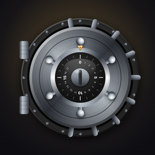

Privacy Policy
iCrack · last updated 28 October 2026
No data collected
iCrack does not collect, store or share any personal data. There are no accounts, no analytics, no advertising and no tracking.
On your device
Your progress (stars, best scores and which rules you have seen) is saved only on your iPhone. It never leaves the device and is deleted when you delete the app.
Sensors
The game reads the hinge angle of your iPhone Duo to turn the dial. This happens only while you play and is not recorded or sent anywhere.
Ratings
iCrack may ask you to rate it using Apple's standard rating dialog. Ratings are handled by Apple.
Contact
Valentin Tim Erler, Switzerland
Email: support.icrack@calileo.ch